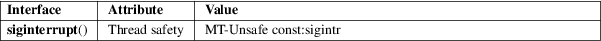

siginterrupt − allow signals to interrupt system calls
Standard C library (libc, −lc)
#include <signal.h>
[[deprecated]] int siginterrupt(int sig, int flag);
Feature Test Macro Requirements for glibc (see feature_test_macros(7)):
siginterrupt():
_XOPEN_SOURCE >= 500
|| /* Since glibc 2.12: */ _POSIX_C_SOURCE >= 200809L
|| /* glibc <= 2.19: */ _BSD_SOURCE
The siginterrupt() function changes the restart behavior when a system call is interrupted by the signal sig. If the flag argument is false (0), then system calls will be restarted if interrupted by the specified signal sig. This is the default behavior in Linux.
If the flag argument is true (1) and no data has been transferred, then a system call interrupted by the signal sig will return −1 and errno will be set to EINTR.
If the flag argument is true (1) and data transfer has started, then the system call will be interrupted and will return the actual amount of data transferred.
The siginterrupt() function returns 0 on success. It returns −1 if the signal number sig is invalid, with errno set to indicate the error.
|
EINVAL |
The specified signal number is invalid. |
For an explanation of the terms used in this section, see attributes(7).

POSIX.1-2008.
4.3BSD, POSIX.1-2001. Obsolete in POSIX.1-2008, recommending the use of sigaction(2) with the SA_RESTART flag instead.
signal(2)